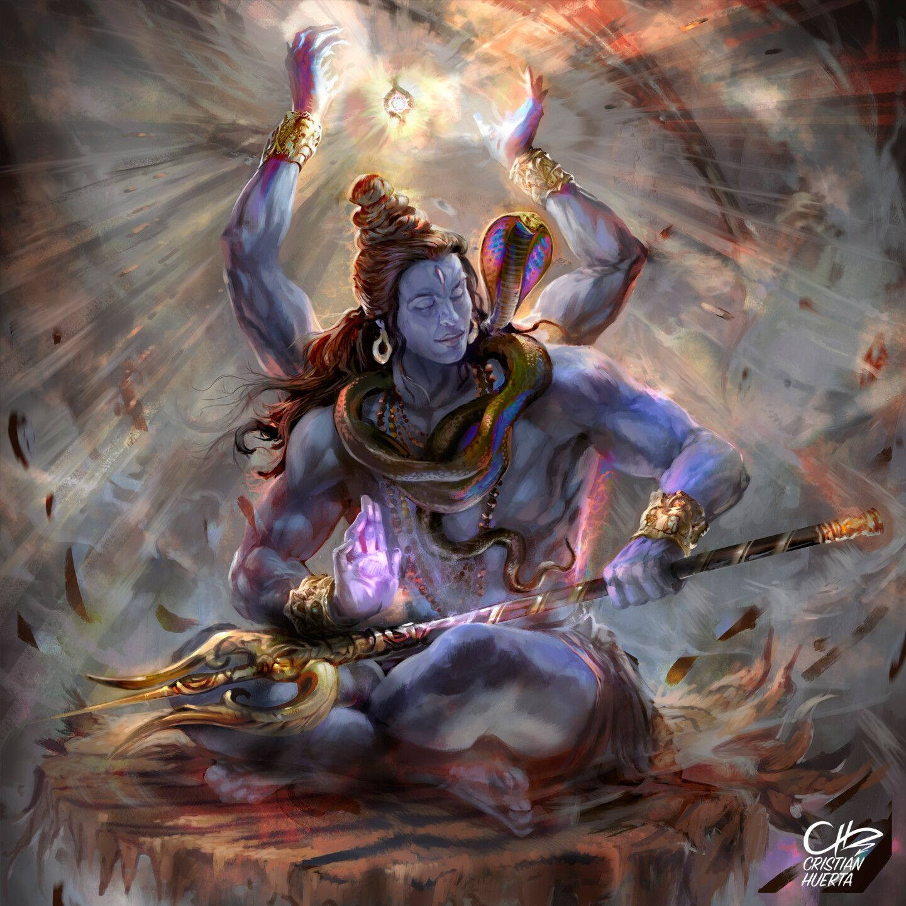
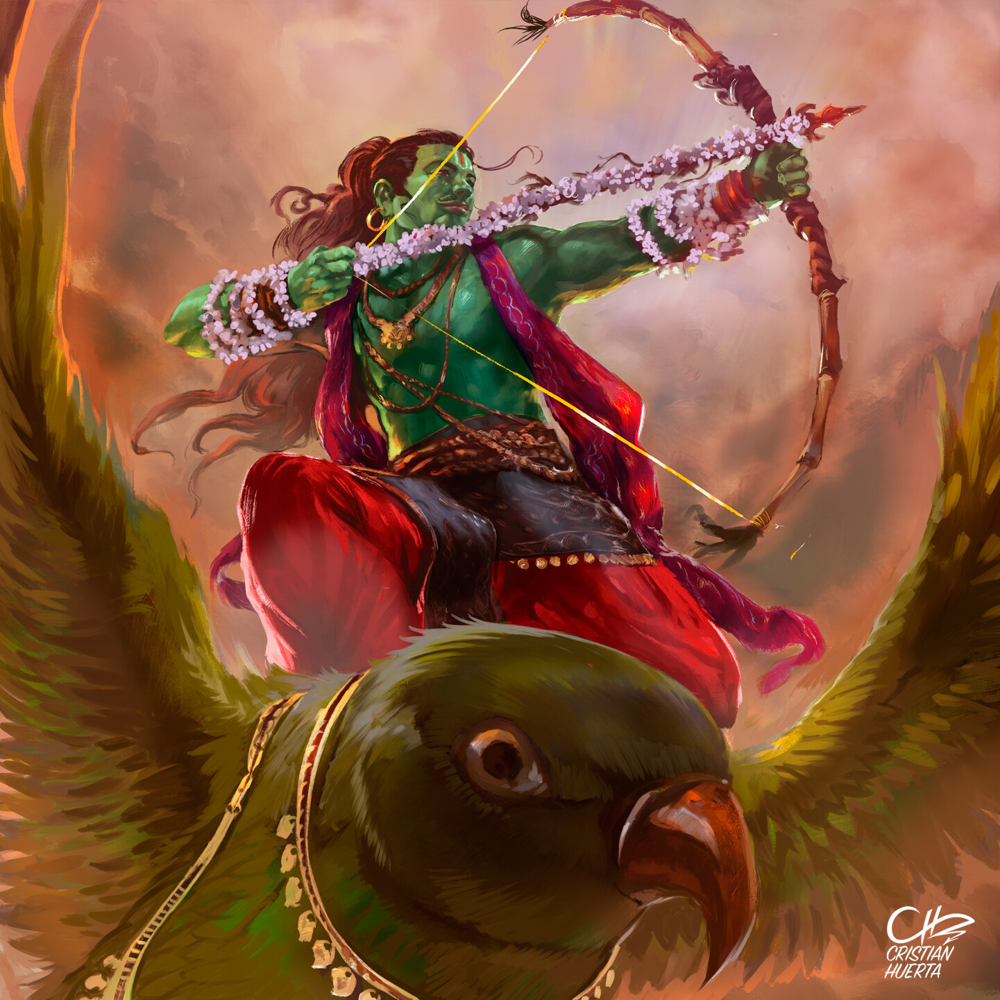

Uma História de Shiva
Por Cinmaya Mission Trust
“O estudo do Simbolismo Hindu guia a mente em direção a Verdades Eternas, por meio das quais a sabedoria da Índia vem fluindo por séculos e séculos, através de histórias e fábulas representadas na dança e no drama, retratadas em pinturas e esculturas, induzindo o homem a seguir o modelo de vida que o indica a Eterna Felicidade.” Na Tradição Védica (Hinduismo), Shiva é visto como um dos pilares da Trindade Hindu: Brahma - o Criador, Vishnu - o Preservador, e Shiva - deus da transformação profunda, deus da destruição para uma renovação, responsável pela dissolução da Criação. Naturalmente, a Trindade só executa suas funções com a parceria de suas devis ou Mães Divinas: Sarasvati - o Conhecimento para criar, Lakshmi - a Prosperidade para manter, e Parvati ( ou Durga) - a Matéria para ser transformada.

História do Yoga
Começamos a publicar em nosso site a história do Yoga escrita pelo mestre Paulo Murilo Rosas, que trouxe da Índia para o Brasil a técnica do Dakshina Tantra. Dividida em quatro capítulos, a narrativa permitirá um conhecimento sobre as origens desta prática milenar, que tanto tem ajudado as pessoas na busca do autoconhecimento e no equilíbrio da personalidade.
Yoga Pré-Clássico
Por Paulo Murilo Rosas
Vamos iniciar os nossos estudos através de parâmetros ocidentais e, por isso, adotar a nomenclatura corrente, dividindo a exposição em: Yoga Pré-Clássico, Yoga Clássico, Yoga Pós-Clássico e Yoga Contemporâneo. A palavra Yoga é encontrada nos Vedas, mais especificamente nas várias Upanishads, sempre com o significado de tudo aquilo que serve como um meio para se alcançar o equilíbrio da personalidade e o autoconhecimento. A época do surgimento da Yoga Pré-Clássico fica por volta de 5.000 a 3.000 a.C. e está baseada no florescimento da chamada civilização do Indo/Saraswati e, conseqüentemente, nas pesquisas feitas nas cidades descobertas nesta região como: Mohenjo-Daro, Harappa, Kalibangan e na cidade portuária de Lothal.
Yoga Clássico
Por Paulo Murilo Rosas
Segundo a tradição, o criador do Yoga como filosofia foi Hiranyagarba, muito embora, os pesquisadores não se cansem de afirmar que o Yoga de Patanjali representa um clímax no longo e contínuo desenvolvimento desta filosofia. Apesar de o considerarem somente um compilador e um sistematizador, de qualquer forma, não se pode negar a importância de sua obra: os “Yoga Sutras”. Alguns historiadores apontam o nascimento de Patanjali por volta do século II d.C., outros acham que ele viveu por volta do século II a.C. e afirmam ter sido ele quem escreveu o “Maha-Bhashya”, a gramática da língua sânscrita. Os Sutras de Patanjali possuem quatro capítulos: - O primeiro chamado de Samadhi Pada (Capítulo sobre a Iluminação) - O segundo chamado de Sadhana Pada (Capítulo da Disciplina). - O terceiro chamado Vibhuti Pada (Capítulo dos Poderes). - O quarto chamado Kaivalya Pada (Capítulo da Realização Final).
Yoga Pós-Clássico
Por Paulo Murilo Rosas
A literatura existente, desta fase, é muito rica em conteúdo, temos os Samhitas, os Ágamas e os Nigamas, os Puranas e as Yoga Upanishads, que surgiram entre os séculos VII a XVII d.C. Samhitas (coletâneas) são textos da tradição Vaishnava que eram organizados em quatro partes: 1. Jnanapada, trata da metafísica ou da sabedoria. 2. Yogapada, trata das técnicas de Yoga. 3. Kriyapada, trata da construção de templos e a criação de imagens sagradas. 4. Caryapada, trata das práticas religiosas e rituais. Um dos primeiros Samhitas foi Satvata, e um dos mais famosos é Vishnu Samhita que apresenta uma Yoga de seis membros, enquanto que o Ahirbudhnya Samhita embora aceitando a divisão de Patanjali define a Yoga em conceitos de unidade: a união do eu individual (Jiva) com o transcendente (Atma). Ágamas e Nigamas são textos da tradição do tantrismo e se apresentam sob a forma de um diálogo entre Shiva e Shakti. Os textos em que Shiva é o Guru são chamados de Ágama; e os textos em que a Shakti é o Guru são chamados Nigama. A principal finalidade deles é dar a liberação ao Jiva propondo um método por meio do qual se alcança a verdade monista através do mundo da dualidade.
Kamadeva: O Deus do Amor

Kamadeva – palavra composta Sânscrita que significa desejo, amor (kama) e deus (deva) – é conhecido na Mitologia Hindu como o Deus do Amor. Segundo um hino do Rg Veda, Kama é adorado pelos deuses e é dito que não existe ninguém igual a ele. Segundo outro hino, ele é o deus do amor sexual, como o Eros dos gregos e o Cupido dos latinos. Kamadeva é representado, geralmente, como um belo jovem que segura um arco e uma flecha de flores.Viaja ao redor dos três mundos, como personificação da primavera, acompanhado de sua esposa Rati (significa prazer) e envolvido por suaves brisas. Em Bengala, não há imagens representando-o, mas é adorado por ocasião do casamento e os noivos pedem a ele felicidade no matrimônio e para a descendência.
Entre em Contato
Endereço:
Rua do Catete, 344 s/ 202 - Catete (Próximo à estação metrô Largo do Machado) Rio de Janeiro - RJ
Telefone:
(21) 2205-6073